结论：画风和爆发力应保留，主要问题是镜头尺度反复变化、过短的过渡帧，以及全屏叠加时缺少清晰的空间参照。只修平地面圈不足以解决这些问题。
以下是美术/时序审查意见，未据此自动删帧或重画。编号按实际播放顺序，缩略图为素材原方向；游戏我方播放有水平镜像，问题位置随之翻转。
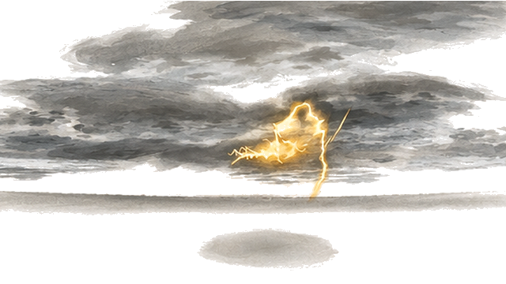
云层和小雷核建立气氛；横贯的灰线叠到场景里像额外地平线。
建议：保留气势，清理画进特效的地面线。
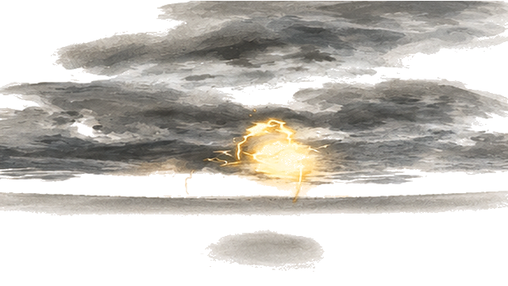
雷核略放大，和前帧方向一致。
建议：保持雷核位置。
雷核突然变细，蓄力强度回落。
建议：让雷核收缩有对应蓄力节奏。
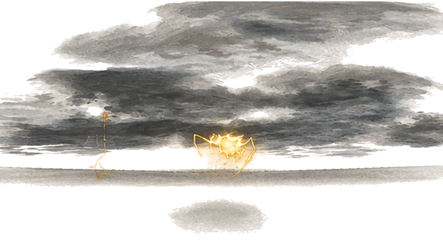
亮核进一步缩小，轮廓与上一帧变化较大。
建议：延续同一雷核轮廓。
小雷核作为第一次爆发前的压缩点有效。
建议：可作为蓄力停顿。
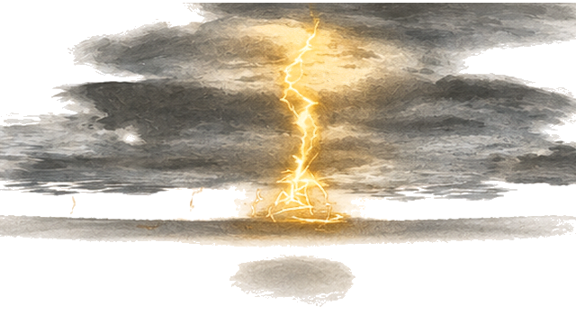
突然出现贯穿云层的细竖雷，落点接近但过渡很短。
建议：与下一帧穹顶衔接。
第一次大爆发明确，具备原版冲击力。
建议：保留，避免后面连续使用同等贴脸峰值。
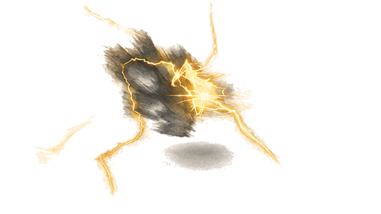
穹顶突然变成孤立雷团，云层消失，且仅约11毫秒。
建议：补收缩过程，或并入下一帧。
独立雷团延续上一形态。
建议：承接上一帧，保持尺度。
雷团骤缩为小亮点，空间参照减少。
建议：维持亮核运动方向。
能量重新聚集，轮廓可读。
建议：保留为发射准备。
星形亮核有明确发射前姿态。
建议：与前后亮核统一中心。
相近亮核再次出现，和前帧重复较多。
建议：合并重复停留，把时间让给关键过渡。
星形突然放大并带局部裁边，约16毫秒。
建议：保留短促爆发，但应有可见前导。
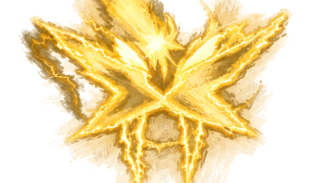
星形与分支占满画面，多个方向撞边。
建议：补全画外轮廓后适度拉远；不要只缩小已裁断图片。
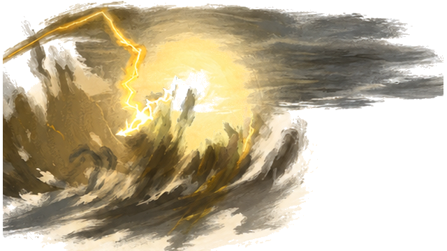
从正面星形跳成侧向雷浪，镜头方向突然改变。
建议：统一发射方向与云层流向。
雷浪向侧方推进，力度好。
建议：保留为主穿梭段。
雷束收拢并向远处离开。
建议：保持与17帧的轨迹。
主雷进一步变细，运动延续。
建议：可缩短但不跳过轨迹。
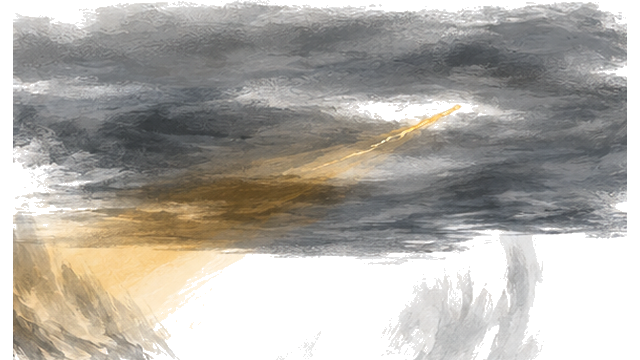
消失帧只有约8毫秒，很难稳定显示。
建议：提高到至少1–2个显示帧，或明确合并。
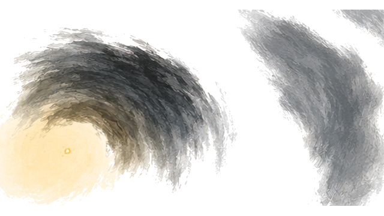
云层布局完全换成两个弧团，雷核重新出现在远处。
建议：需要明确的转场或保持同一空间。
远处雷核变化小。
建议：合并重复，让视线有落点。
远处雷核变亮，是靠近的合理起点。
建议：保留。
从远处小核直接跳成大雷束，近景开始。
建议：补中景，统一靠近速度。
雷束同时碰到上边、左边，不能完整读出形体。
建议：扩大原绘图视野，保留雷束厚度。
主雷横跨大半画面，细碎分支增多。
建议：缩远并统一轮廓，不降低整体透明度。
粗雷突然变成细长Z形，体积连续性断开。
建议：保留粗细趋势，减少无因变形。
雷束走向从上一帧再次翻折。
建议：保持一条明确运动路径。
右侧主雷已出画，贴脸感明显。
建议：补全画外部分后统一镜头距离。
主体又缩成小Z形，形成忽大忽小。
建议：以同一雷束的运动替代尺寸跳变。
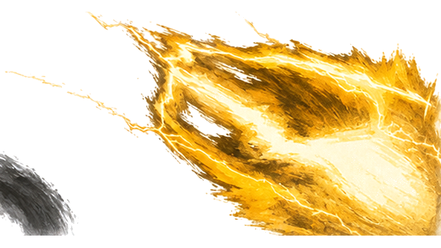
突然变成巨大的实心楔形，像切到另一组镜头。
建议：保留一次强近景，前后补形态过渡。
巨型楔形延续，几乎只剩雷束表面。
建议：减少此类近景持续占比。
雷束在上边被切掉，形体与前帧不完整。
建议：补画边外轮廓，统一离场方向。
黑云突然横挡主体，约16毫秒。
建议：把云作为明确遮挡转场，不能随机盖住。
雷尖只剩上方一角，视线失去主体。
建议：与上一帧合并为清楚的离场。
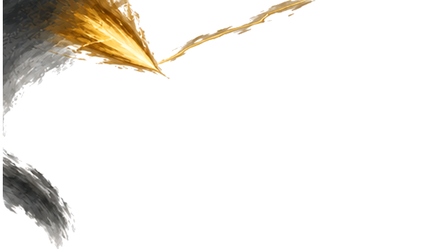
几乎空场，只剩上边雷尖。
建议：减少空场；把时间用于接近最终落点。
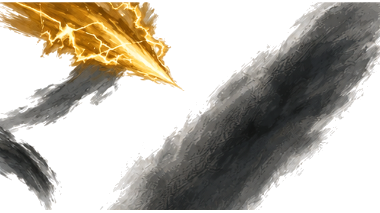
小雷尖再次向下出现，同时斜黑云抢视线。
建议：保持主雷和云的前后层次。
雷尖位置、尺寸又回摆。
建议：锁定连续下降轨迹。
向最终方向冲出的长雷束有气势。
建议：保留，但减少前面的反复折返。
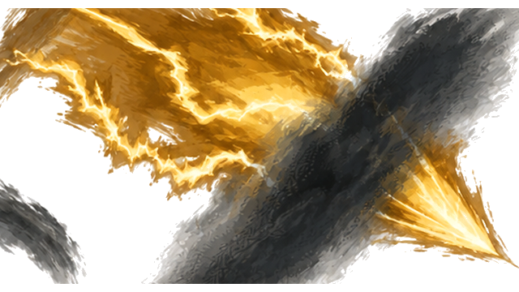
巨大主雷再次出现，黑云在中间切断。
建议：不再追加新的镜头距离峰值。
最近的一帧，金色面与黑云占据大部分画面。
建议：降低持续时间和尺度，保留爆发而非覆盖整屏。
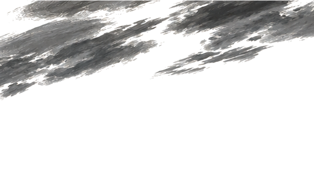
突然完全退到只有云的远景。
建议：必须接上离场/落场过渡。
雷尖从云后出现，最终落场开始。
建议：保留这条明确的下降线。
雷尖继续下降。
建议：与43、45统一轴线。
触地前一帧，动作可读。
建议：给足触地前的可见时长。
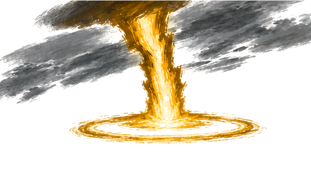
首次触地已修平，但只有约22毫秒。
建议：延长少量，让人看清命中位置。
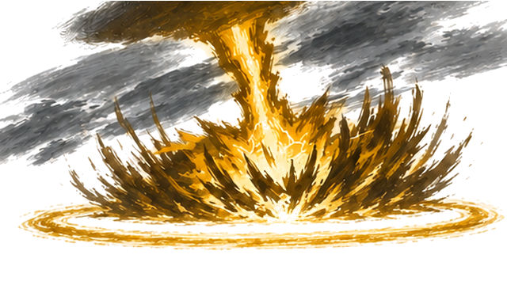
大爆发最有冲击力，修正后的地面圈明确。
建议：作为全段主要力量峰值，保持规模。
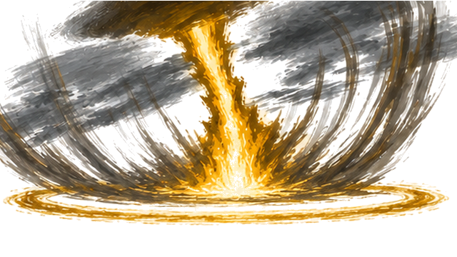
向上翻卷的墨浪很有气势。
建议：保留，承接落地爆发。
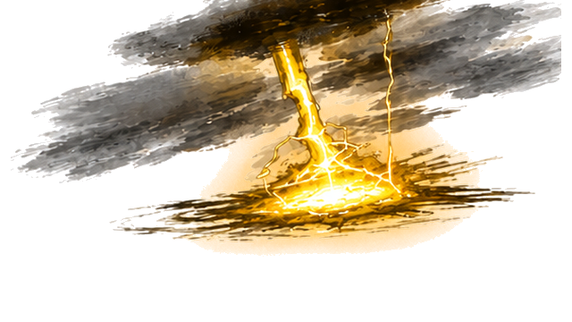
爆发突然塌成较小平面电池，尺度回落较快。
建议：补一帧收束，避免瞬间泄力。
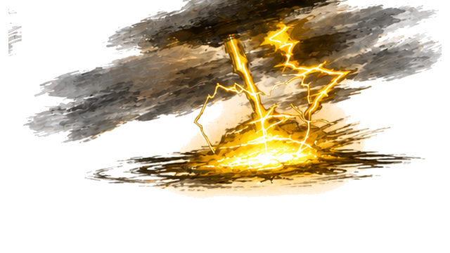
持续落雷和分支有连贯性。
建议：保持同一落点。
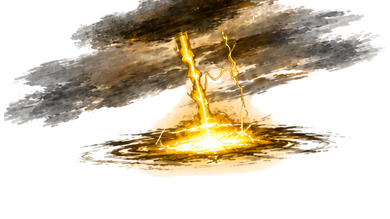
与50相近，但只停约33毫秒。
建议：合并重复或让第二次冲击有预备。
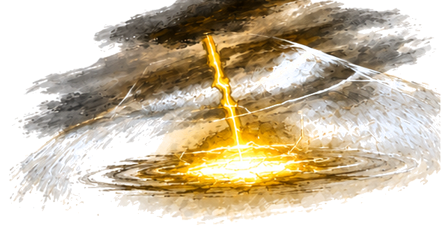
第二冲击刚出现但只停约11毫秒；白波抠图偏蓝。
建议：修白波颜色边缘，延长可读过渡。
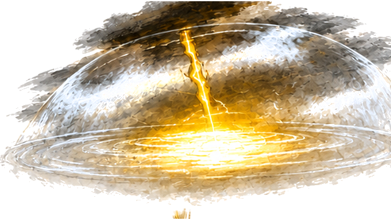
大冲击应保留，但底部混入下一帧小雷段；白波边缘发蓝。
建议：重测切帧分界，清理串帧并修白色区域抠图。
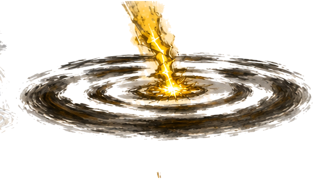
大穹顶突然变成黑墨圈，云层消失。
建议：用短暂消散衔接，保留墨圈气势。
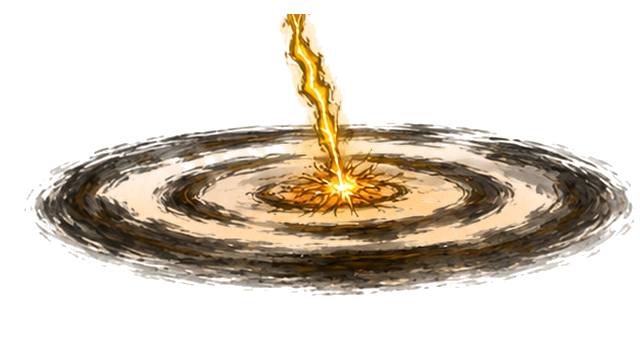
收尾雷束变细，方向稳定。
建议：保持落点，不再旋转地面。
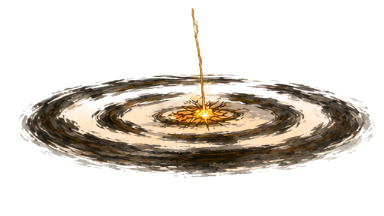
最后残电仅约8毫秒，随后程序淡出。
建议：用明确的末帧停留/淡出，避免尾端一闪。